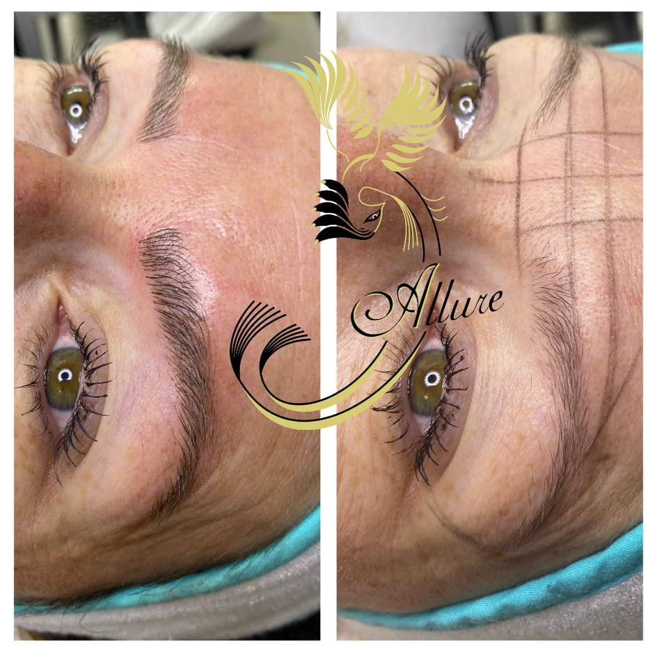
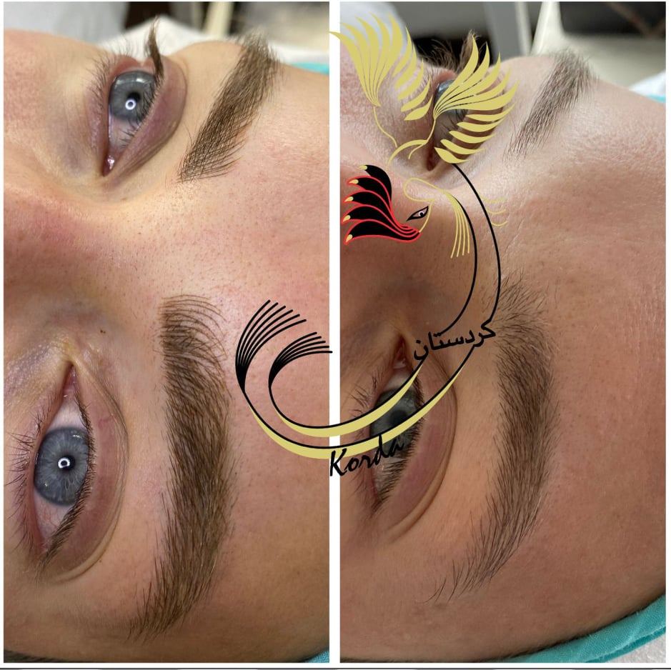

kordestan SaadiProfessional3D Microblading I’m an experienced Microblading technician and instructor. |
Microblading is a cosmetic procedure that involves using a semi-permanent tattoo technique to achieve the appearance of fuller and precisely shaped eyebrows. Unlike a tattoo, microblading uses a manual, handheld tool with tiny needles at the end to create the shape of a small blade (a microblade)Microblading is a cosmetic procedure that involves using a semi-permanent tattoo technique to achieve the appearance of fuller and precisely shaped eyebrows. Unlike a tattoo, microblading uses a manual, handheld tool with tiny needles at the end to create the shape of a small blade (a microblade)
Immediate results. When you walk out of your microblading appointment, you will leave with a noticeable difference in your eyebrows. While your eyebrows may appear darker or a little swollen during the healing time, you will see results immediately.
Convenience. Microblading can replace the need for drawing on or filling in the eyebrows, which will save you time.
Low maintenance. Once you’ve had your eyebrows microbladed and they’ve healed properly, you require no other treatment until the pigment fades, or you want a touch up.
On the day of the procedure, it is important to sit down with the esthetician and voice any questions or concerns. The esthetician should also explain the procedure and the options, including style and color, and make recommendations.
Once the client is comfortable, the technician begins the procedure. The process is very detailed and can take up to 2 hours. It is important for the esthetician to take their time because the result will last for a few years and needs to be done well.